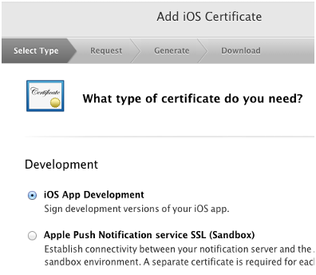

Getting started with push notifications¶
What are push notifications?¶
Nobackend provides a RESTful framework for sending push notifications to your apps, giving you full control over which app users you target, as well as when you send notifications. You can send messages to devices, users, or groups that have specific characteristics and locations. (To receive push notifications, users must be using devices that can connect to the Nobackend). Here are just a couple reasons for enabling push notification support in your app with Nobackend:
- Reach your app’s users with messages they care about. This could be a flash sale happening near them right now (use Geolocating your Entities) or a lunch special at a favorite restaurant. You could even let a user know it’s her turn in a game she’s playing with a friend.
- Keep your app footprint low while communicating in a high-value way with your app’s users. Compare pushing data with CPU- and memory-heavy pull processes. In those, an app actively listens on an endpoint, regularly pulling data (such as news feeds, new emails, or stock market updates) to the device.
Prerequisites¶
You will need to test with a mobile device running the platform you’re developer for. In the case of Android, you might be able to use an emulator. It is not possible to test push notifications from a web browser.
iOS Prerequisites¶
To develop push notifications for an iOS app, you’ll need:
- A Mac to generate the necessary SSL certificate.
- An iOS developer account. You’ll need this to register for an App ID and get a provisioning profile. To get an account, visit the [iOS Dev Center](https://developer.apple.com/ios/download/).
- An actual iOS device to test push notifications. It’s not yet possible to develop push notifications with an emulator.
- An iOS provisioning profile
For iOS app testing, you need a provisioning profile that’s associated with an Apple ID. You set up the provisioning profile in the Apple developer portal, download the profile, and import it into Xcode.
To set up a provisioning profile, you need to create an “iOS App Development” certificate in the Apple developer portal. For example, in the Apple APNs setup earlier in this tutorial, you created a certificate in the Apple developer portal to be used for push notifications. However, you won’t be able to create a provisioning portal with just that certificate. You also need to create an “iOS App Development” certificate (the configuration settings don’t matter), as shown in the following image.
After you create an iOS App Development certificate, you can create a provisioning profile that includes your App ID/certificate for push notifications.
Android Prerequisites¶
It’s generally a best practice to develop Android apps by testing and debugging with an Android device. It’s also possible to use an emulator.
Before testing and debugging with an Android device, you’ll need to set up your device for development. Be sure to see the Android documentation on [using hardware devices](http://developer.android.com/tools/device.html).
To test with an emulator, you will need to follow these steps:
- Ensure that you have Google API 8 (or above) and Android 2.2 (or above).
- Using the Android SDK Manager, install Google Cloud Messaging for Android Library.
- Using the Android Virtual Device Manager, create an emulator whose target is Google APIs.
- Ensure that the emulator you’re using includes a Google account.
Next:
- Launch the emulator.
- In the emulator, click the Menu button, then go to Settings > Accounts & Sync.
- Add a Google account.
- Once you’ve finished these steps, you should have an emulator that can receive push notification messages.
PhoneGap Prerequisites¶
You’ll need to test with a device or emulator. It is not possible to test push notifications with a browser alone.
Setup overview¶
The following steps get you set up so that your app can receive push notifications. Keep in mind that these steps build on one another. In other words, you’ll need values generated in step 1 in order to complete step 2, and so on.
For a walkthrough of these steps using a push sample app, see Tutorial: Push notifications sample app.
- Register your app with push notification services. Your notification messages will be forwarded to devices by Apple and/or Google. So you’ll need to register with Apple APNs and/or Google’s GCM. For more information, see Registering with a notification service.
2. Create a notifier to send notification messages from the Nobackend to notification services. The Nobackend will use your notifier to send your messages to a notification service. For details, see Creating notifiers. To create a notifier, you’ll need information generated by registering with a push notification service. You’ll need a separate notifier for each app/platform combination.
3. Register devices at run time. At run time, your code will register to receive notifications. To do this, your code uses information from the notification service and your notifier. For more, see Managing users and devices.
4. Send and manage push notifications. You use Nobackend API notification endpoints to target devices, users, or groups with your messages. To learn more, see Creating and managing notifications.
How it works¶
Click a tab below to view more information about how the pieces connect once you’ve got it set up.
Apple APNs¶
The diagram below illustrates what things should look like once you’ve gotten set up to send notifications that are received by your app.
A. At configuration time, you [create an App ID](registering.html), then [create a notifier](creating-notifiers.html) with a .p12 certificate you generate on your Mac. The .p12 certificate correlates the notifier (which you will use to send notification messages) with the App ID (so that APNs will forward your notifications to devices).
B. A run time, your app’s code Managing users and devices by invoking the registerForRemoteNotificationTypes method to receive a token it can send to Nobackend.
C. At run time, your app’s code Managing users and devices by sending the name of the notifier you created. This ensure’s that there’s a device entity in your Nobackend application. That way, you can address the device with notification messages.
Google GCM¶
The diagram below illustrates what things should look like once you’ve gotten set up to send notifications that are received by your app.
A. At configuration time, you Registering with a notification service, then Creating Notifier with an API key from the project. The API key correlates the notifier (which you will use to send notification messages from the Nobackend) with the API project (which will forward your notifications to devices).
B. At run time, your app’s code Managing users and devices for notifications by sending the name of the notifier you created. This ensure’s that there’s a device entity in your Nobackend application. That way, you can address the device with notification messages.
C. A run time, your app’s code registers with Google for notifications Managing users and devices by sending the number of your API project as a “sender ID”. The project is the actual notification “sender” that will forward notifications to your app. In other words, the app is telling Google that it wants to receive notifications from that sender.